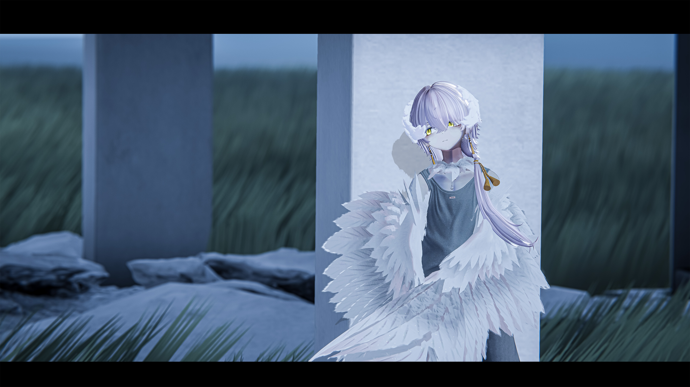
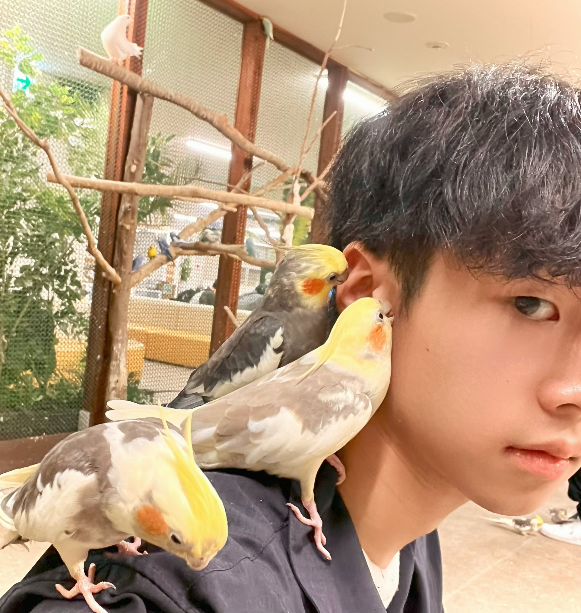

Works


About Me

加藤 飛天 / Hiten Kato
筑波大学 情報学群 情報メディア創成学類 3年
技術とクリエイティブの融合に興味を持ち、3DCG（Blender/Unity）を用いたルック開発や空間表現、2Dグラフィックデザイン、インタラクティブなアプリケーション開発を幅広く実践しています。計算やインフラの領域に留まらず、人間の視覚にダイレクトに届く可視化されたコンテンツ、エンタテインメント表現に関わるクリエイター / テクニカルアーティストを目指しています。
Skills
- Languages: C, Python, SQL, HTML/CSS, XSLT
- 3D / XR Tools: Blender, Unity (ARFoundation), VRChat SDK
- 2D / Design Tools: Photoshop, Illustrator, InDesign
- Hardware / Other: 3Dプリンター出力・後加工（塗装）, Git/GitHub